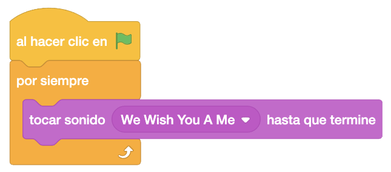
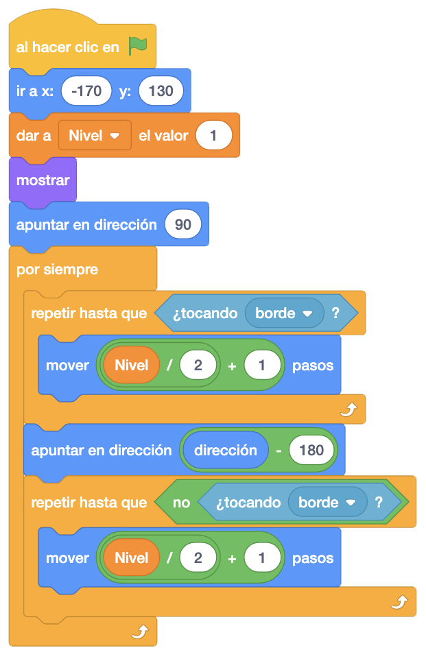
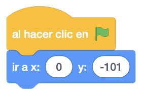
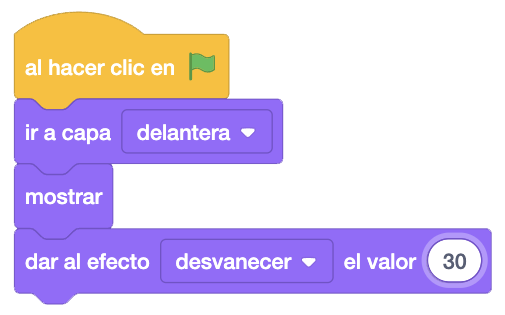
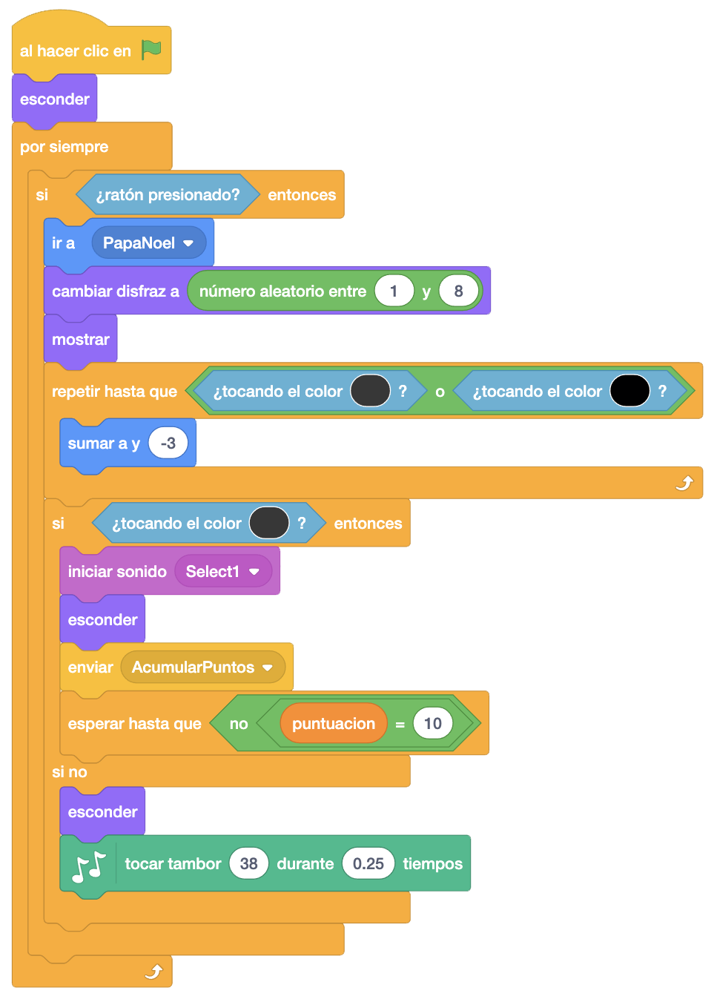
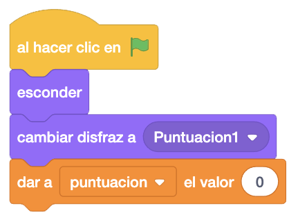
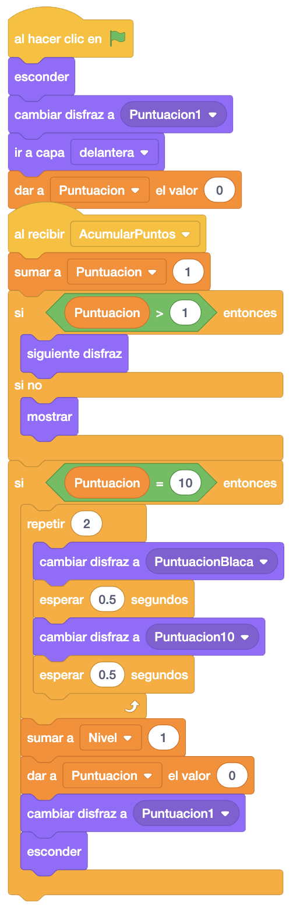

Necesitaremos la música navideña y también a Papá Noel, que será el que tire los regalos, una puntuación completa para ponerla de fondo y translúcida y la puntuación que vamos obteniendo (ambas en forma de regalo), los regalos que va lanzando Papá Noel y los edificios.
Vamos a necesitar un único escenario de estrellas para el fondo del juego.
Para descargar los objetos necesarios para el juego, lo haremos desde este link. Es un archivo comprimido con 5 objetos, 1 sonido y 1 escenario. Lo descargaremos y lo descomprimimos en el directorio del alumno.
El objetivo del juego es que Papá Noel acierte, metiendo los regalos por las chimeneas.
Este juego, es el primero de una serie de juegos para días especiales, que iremos haciendo según lleguen estos
días.
Vamos a empezar por poner el fondo de estrellas. En este fondo pondremos que esté continuamente sonando la
música navideña de fondo.

Ahora pondremos a Papá Noel en su trineo preparado para lanzar los regalos. Le pondremos en la esquina
superior izquierda, pero sin tocar los bordes.
Vamos a crear una variable "Nivel" para ir guardando el nivel de dificultad de nuestro juego y que
inicializaremos con "1".
Lo mostrremos y lo orientaremos a la derecha.
A continuación, haremos una rutina en la que cuanto mayor sea el nivel, mayor será la velocidad de nuestro
trineo.
También añadiremos a esa rutina que al tocar en el borde lateral, cambiemos la dirección al otro lado.

Vamos a poner a continuación los edificios, que simplemente los colocaremos en la parte baja de nuestro escenario.

Colocaremos ahora la barra de regalos donde iremos poniendo la puntuación conseguida. Lo mandaremos a la capa delantera, le daremos el efecto desvanecer para que luego se vean bien los puntos conseguidos y lo mostraremos.

Vamos a lanzar ahora los regalos. Para ello, esconderemos el regalo y haremos una rutina donde estaremos
preguntando si hemos pinchado en el escenario para soltar el regalo.
En el caso de hacer clic en la pantalla, mandaremos el regalo a Papá Noel, le pondremos uno de los disfraces
aleatoriamente, y lo mostraremos.
Ahora lo haremos caer hasta que toque las casas o las chimeneas mediante el color de las mismas.
A continuación, y una vez haya llegado abajo, veremos si ha tocado las chimeneas.
Si es así, haremos un sonido, esconderemos el regalo, enviaremos el mensaje "AcumularPuntos" para ir mostrando
la puntuación y esperaremos hasta que la puntuación no sea 10 para que cuando lo sea, dé tiempo de hacer el
efecto oportuno.
En el caso de quer no toquemos la chimenea, lo esconderemos y haremos el sonido de un tambor.
Para poder hacer el sonido del tambor, tendremos que añadir los bloques de código de música

Terminaremos programando el objeto puntuación. Para ello, crearemos una variable "Puntuación" en la que iremos
acumulando los puntos.
Al hacer clic en la bandera, lo que haremos será esconderlo y poner el primer disfraz. También inicializaremos
la variable "Puntuación" a "0".

Finalmente, programaremos el mensaje "AcumularPuntos". Lo primero será sumar "1" a la variable "Puntuación".
Ahora controlaremos si la puntuación es mayor que "1". Si es así, pondremos el siguiente disfraz y si no,
mostraremos el objeto.
Después, evaluaremos si hemos llegado a 10 puntos. Si lo hemos conseguido, repetiremos 2 veces poner en blanco
los regalos y poner todos los regalos, para ver que hemos pasado de nivel.
Después de estas dos repeticiones al llegar a los 10 puntos, sumaremos 1 a la variable "Nivel", volveremos a
inicializar la variable "Puntuación" a "0", Pondremos el primer disfraz y lo esconderemos.

Y el juego quedaría así.
Para ver el juego terminado pulsa
aquí.
Para descargarte el juego terminado pulsa
aquí.